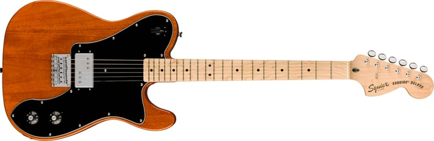
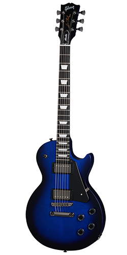
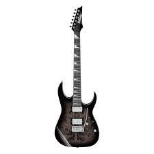
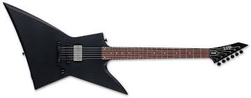
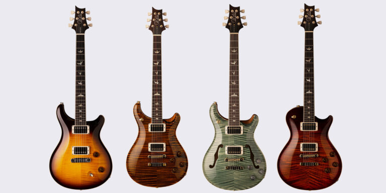

Fender
Fundada por Leo Fender en la década de los años 40 ‘s, es la empresa más grande del mundo en la fabricación y producción de guitarras y bajos eléctricos. Sus modelos se encuentran entre las guitarras más vendidas de la historia.
Entre sus importantes innovaciones, Fender creó la primera guitarra de cuerpo sólido, el primer bajo de producción masiva, así como la icónica guitarra Stratocaster o Strat. La cual es uno de los modelos más vendidos del mundo.
Gibson
En común escuchar que, si no hay una guitarra Fender en el escenario, hay Gibson (o las dos). Esta marca de guitarras es uno de los principales competidores de Fender en influencia y producción masiva. Su creador, Orville Gibson, empezo como fabricante de guitarras acústicas hasta que en los años 50 ‘s, por sus innovaciones acústicas, se convirtió en una referencia de calidad para los amantes de la guitarra eléctrica con su modelo Les Paul.
Ibanez
En la década de los años 1970, la empresa se dedicó a fabricar copias de las guitarras Fender y Gibson, por lo que se vio envuelta en problemas legales. Posteriormente realizaron modelos originales Incluyendo las guitarras eléctricas de la firma para artistas como Paul Stanley de Kiss, o Bob Weir, de Grateful Dead
ESP
Es una compañía japonesa de guitarras y bajos eléctricos con sede en Burbank, California. ESP saltó a la fama por fabricar réplicas de calidad de modelos de guitarras americanas como el Stratocaster de Fender y el Explorer de Gibson. Actualmente sus guitarras son muy populares entre los artistas de metal y hard rock.
Paul Reed Smith
Esta es una marca joven que inició en 1985 con sede en Stevensville, Maryland. Su fundador, del mismo nombre, comenzó vendiendo guitarras en la bodega de su coche, y su crecimiento fue rapido hasta convertirse en una de las marcas más reconocidas de los Estados Unidos.